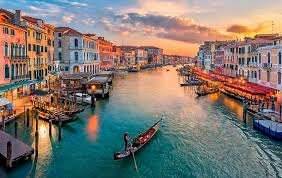

Mis viajes favoritos
Suiza
Viaje a suiza en 2023, mas especificamente a Zurich, es una ciudad muy linda, moderna y limpia. Una parte que me gusto mucho del viaje fue el museo de lindt, el que se muestra en la foto.

Italia
Fui a italia en 2023, a Venecia, Florencia y Roma, el que mas me gusto fue Venecia porque vi vistas y atardeceres hermosos como el que muestro aca.
Estados Unidos
Viaje a Estados Unidos en 2025, especificamente a nueva york, orlando y miami. Nueva york me parecio una ciudad muy moderna y hermosa, con vistas impresionantes, orlando me sorprendio con sus parques y miami con sus playas.
Voley, mi hobbie
Hago voley en el club USAR desde 2019, lo hago los lunes, miercoles, viernes y los domingos tengo partidos. Lo hago con amigas de mi edad, mas chicas y mas grandes, siempre me saca de mis pensamientos. Suelo tener las piernas lastimadas porque soy libero, uso la camiseta numero 3.
Sunkies, mi emprendimiento
En septiembre de 2025 aproveche mi gran aor por la cocina y me cree mi propio emprendimiento de cookies, las vendo a traves de instagram, entrego los lunes y viernes y cocino los domingos y jueves, me encanta la cocina y mas si es algo dulce, tengo 5 gustos y cada semana saco alguuno especial nuevo.
Las de siempre, mis amigas
En esta foto se ven mis amigas de la escuela, son amigas o que commparto mi vida desde que tengo dos años o que entraron en secundaria, aunque algunas de ellas actualmente se cambiaron de escuela el vinculo sigue siendo el mismo, aparte de ellas tengo amigas del barrio donde vivo y de otras actividades por afuera de la escuela.